Caste composition and rural electrification in India
I analysed 12,533 real villages, covering 1,342 administrative blocks and 129 districts across 12 states. I found no clear primary evidence that RGGVY eligibility effects on domestic village availability or household electric lighting differ with baseline SC/ST composition after adjustment for four primary comparisons. This is not evidence that benefits are equal.
For household electric lighting, a 10-percentage-point larger baseline SC share is associated with an estimated -0.76-percentage-point difference in the eligibility effect (95% interval -1.56 to +0.04; raw p=0.064; Holm p=0.257). The corresponding ST estimate is -0.39 pp (95% interval -1.09 to +0.31; Holm p=0.823).
I compiled the formal PDF from report.tex with LuaLaTeX (TeX Live 2026) and visually checked all 26 pages. All eighteen graphs in this gallery also appear in the PDF graphical appendix, on landscape pages 9-26. I executed the complete R pipeline and independently reproduced the source reconstruction, all eight regressions and 21 numerical tables. The original publication figures and tables are retained as verified references; R recreates all eighteen graph designs. R master; execution and validation notes. Original analytical extension of published data; publication-level novelty is not claimed.
Pooled regression-discontinuity results
Eligibility at population 300; state-adjusted local-linear estimates with robust bias correction and block clustering. All intervals include zero. These are local eligibility effects.
| Outcome | Bandwidth | Bias-corrected effect (pp) | Robust 95% interval (pp) | Robust p | Villages in h | Blocks in h |
|---|---|---|---|---|---|---|
| Domestic availability | MSE selected | -0.72 | [-3.76, +2.33] | 0.645 | 7533 | 1173 |
| Domestic availability | h=100, b=150 | -0.54 | [-2.93, +1.85] | 0.657 | 12529 | 1342 |
| Household lighting | MSE selected | 1.09 | [-2.23, +4.41] | 0.521 | 10682 | 1288 |
| Household lighting | h=100, b=150 | 1.10 | [-1.94, +4.14] | 0.479 | 12533 | 1342 |
| Commercial availability | MSE selected | 3.59 | [-1.74, +8.91] | 0.187 | 8666 | 1222 |
| Commercial availability | h=100, b=150 | 3.67 | [-0.82, +8.16] | 0.110 | 12529 | 1342 |
| All-sector availability | MSE selected | 2.86 | [-2.61, +8.33] | 0.306 | 8267 | 1205 |
| All-sector availability | h=100, b=150 | 2.94 | [-1.60, +7.49] | 0.204 | 12529 | 1342 |
Primary effect differences
Percentage points per +10 percentage points of pre-policy caste share. Conventional block-clustered 95% intervals; four-test Holm correction.
| outcome | share | estimate | ci_low | ci_high | p_holm | n |
|---|---|---|---|---|---|---|
| Domestic availability | SC | 0.137 | -0.539 | 0.813 | 1.000 | 12529 |
| Domestic availability | ST | -0.077 | -0.625 | 0.472 | 1.000 | 12529 |
| Household lighting | SC | -0.757 | -1.559 | 0.045 | 0.257 | 12533 |
| Household lighting | ST | -0.389 | -1.086 | 0.309 | 0.823 | 12533 |
Graph gallery
Figures include descriptive comparisons, RDD displays, caste interactions and design checks. Click any figure for the full-size image. All CSV results are retained in the repository.
01 population frequencies
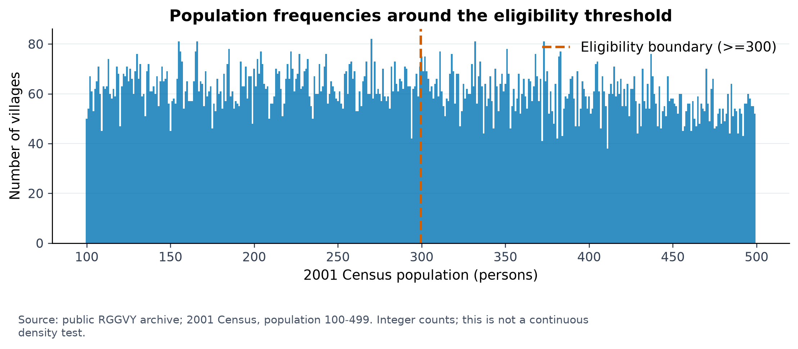
Source: public RGGVY archive; 2001 Census, population 100-499. Integer counts; this is not a continuous density test.
02 baseline caste distributions
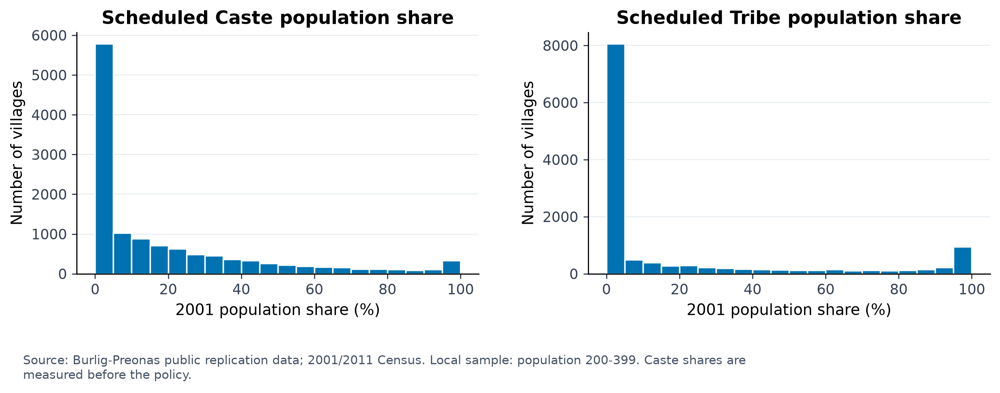
Source: Burlig-Preonas public replication data; 2001/2011 Census. Local sample: population 200-399. Caste shares are measured before the policy.
03 caste composition balance
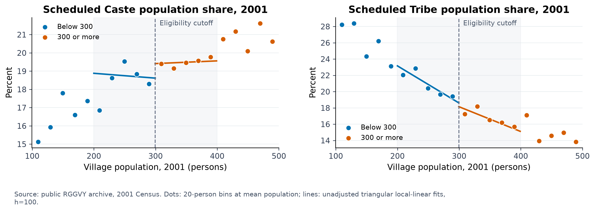
Source: public RGGVY archive, 2001 Census. Dots: 20-person bins at mean population; lines: unadjusted triangular local-linear fits, h=100.
04 rd vd pwr d dom 11
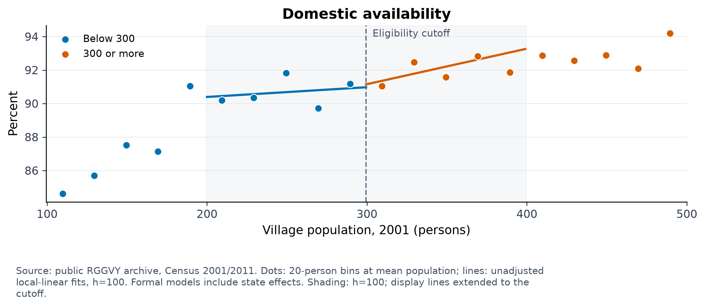
Source: public RGGVY archive, Census 2001/2011. Dots: 20-person bins at mean population; lines: unadjusted local-linear fits, h=100. Formal models include state effects. Shading: h=100; display lines extended to the cutoff.
05 rd hpca11 msl elec
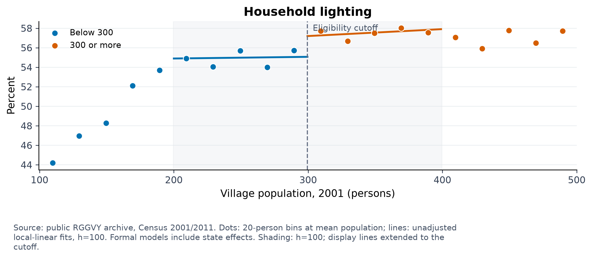
Source: public RGGVY archive, Census 2001/2011. Dots: 20-person bins at mean population; lines: unadjusted local-linear fits, h=100. Formal models include state effects. Shading: h=100; display lines extended to the cutoff.
06 rd hpca01 msl elec
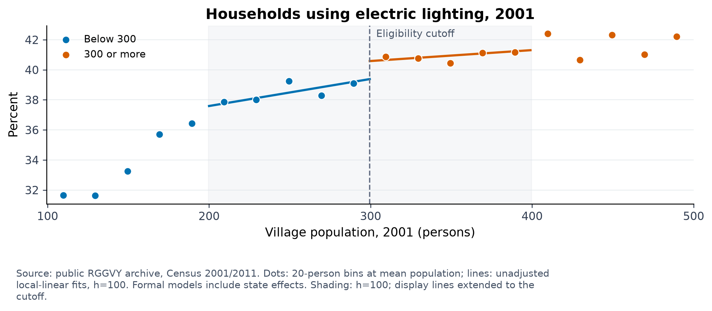
Source: public RGGVY archive, Census 2001/2011. Dots: 20-person bins at mean population; lines: unadjusted local-linear fits, h=100. Formal models include state effects. Shading: h=100; display lines extended to the cutoff.
07 access and adoption by group
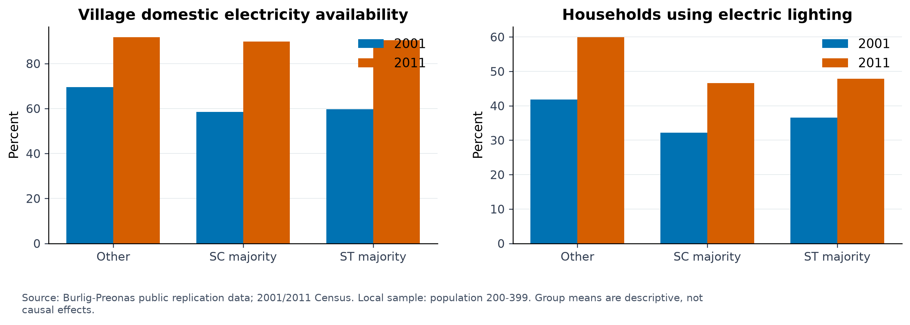
Source: Burlig-Preonas public replication data; 2001/2011 Census. Local sample: population 200-399. Group means are descriptive, not causal effects.
08 primary caste heterogeneity
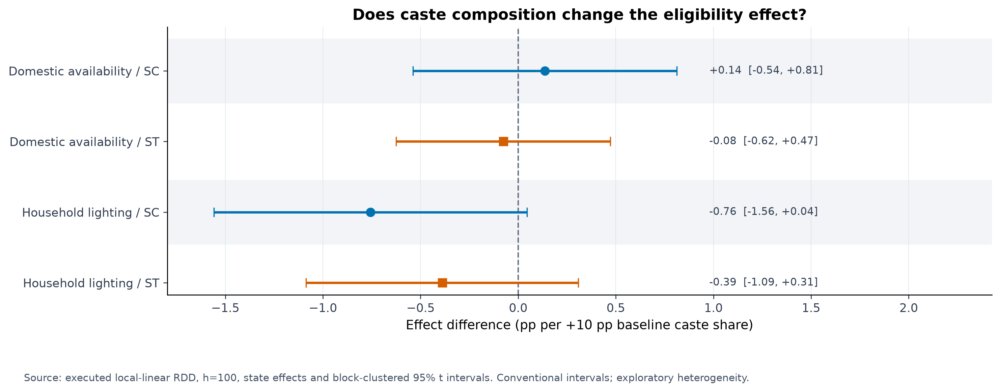
Source: executed local-linear RDD, h=100, state effects and block-clustered 95% t intervals. Conventional intervals; exploratory heterogeneity.
09 employment heterogeneity
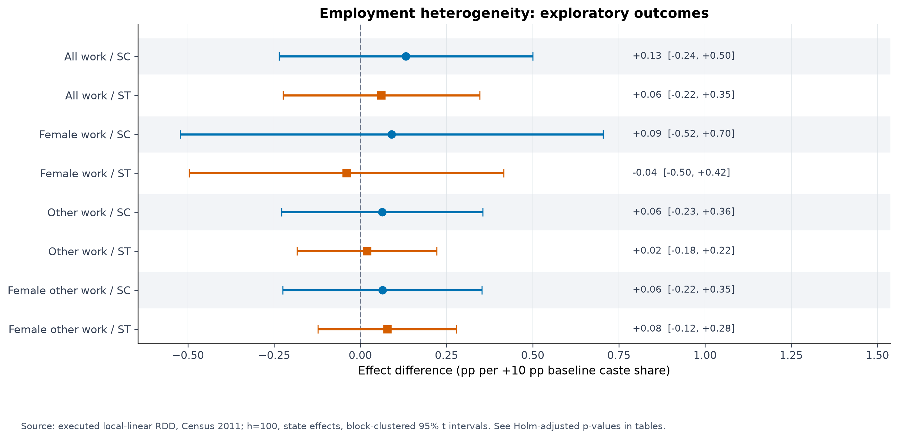
Source: executed local-linear RDD, Census 2011; h=100, state effects, block-clustered 95% t intervals. See Holm-adjusted p-values in tables.
10 bandwidth sensitivity
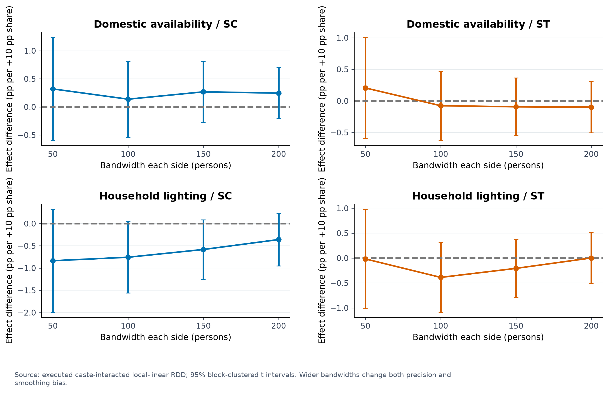
Source: executed caste-interacted local-linear RDD; 95% block-clustered t intervals. Wider bandwidths change both precision and smoothing bias.
11 specification sensitivity
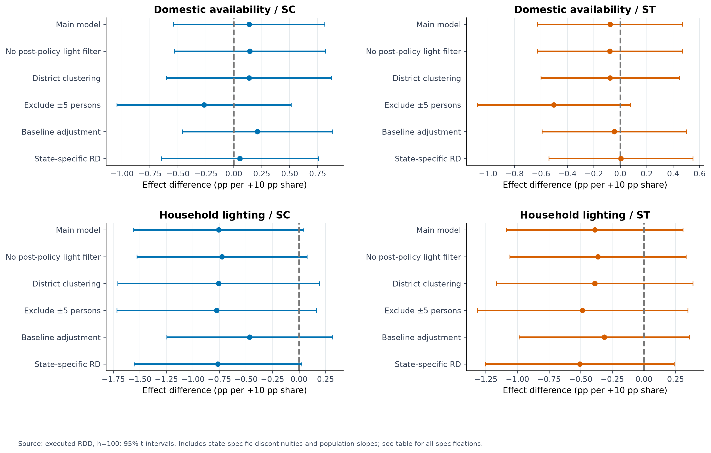
Source: executed RDD, h=100; 95% t intervals. Includes state-specific discontinuities and population slopes; see table for all specifications.
12 baseline balance
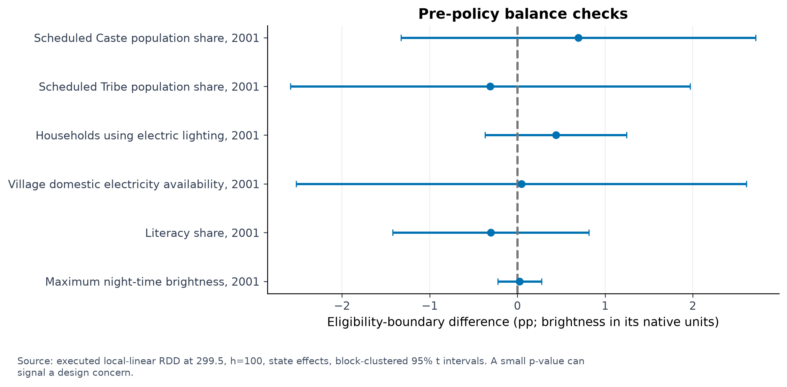
Source: executed local-linear RDD at 299.5, h=100, state effects, block-clustered 95% t intervals. A small p-value can signal a design concern.
13 majority group rdd
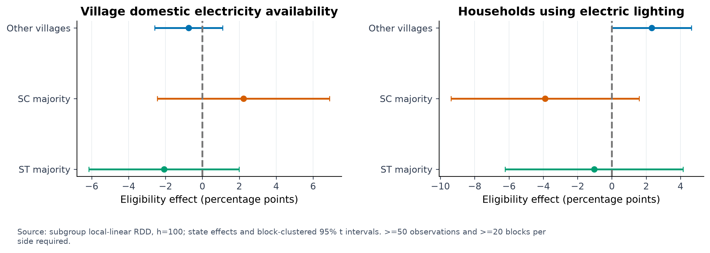
Source: subgroup local-linear RDD, h=100; state effects and block-clustered 95% t intervals. >=50 observations and >=20 blocks per side required.
14 state sample coverage
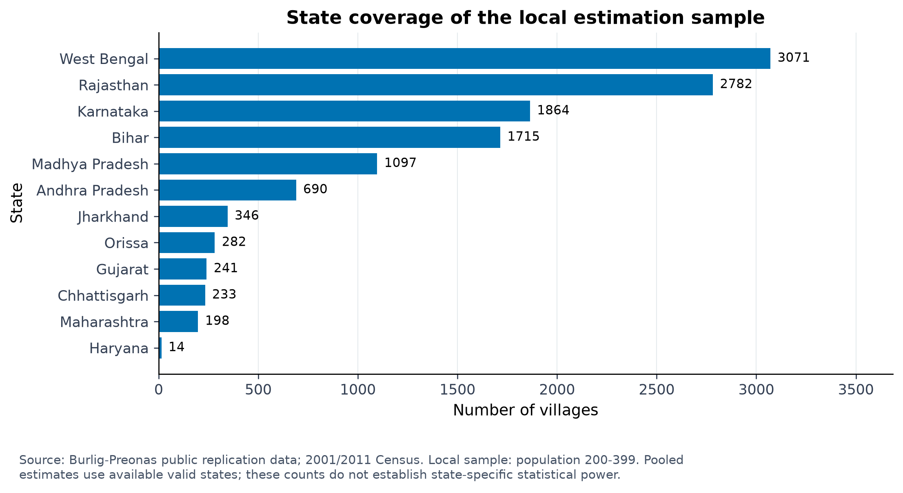
Source: Burlig-Preonas public replication data; 2001/2011 Census. Local sample: population 200-399. Pooled estimates use available valid states; these counts do not establish state-specific statistical power.
15 pre policy nightlight checks
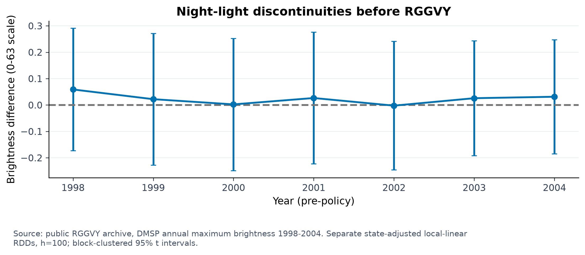
Source: public RGGVY archive, DMSP annual maximum brightness 1998-2004. Separate state-adjusted local-linear RDDs, h=100; block-clustered 95% t intervals.
16 access adoption gap
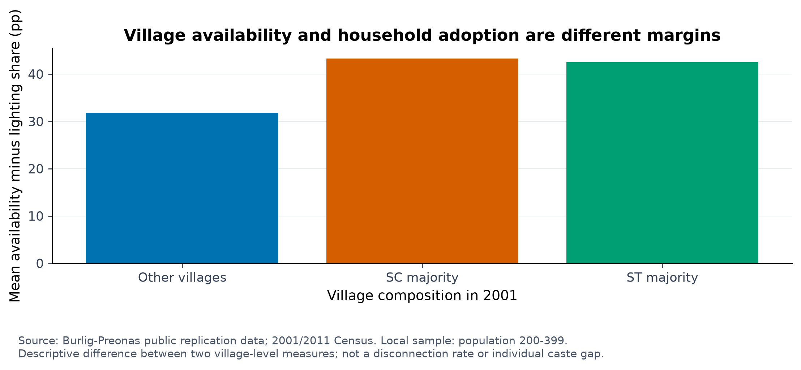
Source: Burlig-Preonas public replication data; 2001/2011 Census. Local sample: population 200-399. Descriptive difference between two village-level measures; not a disconnection rate or individual caste gap.
17 productive electricity rdd
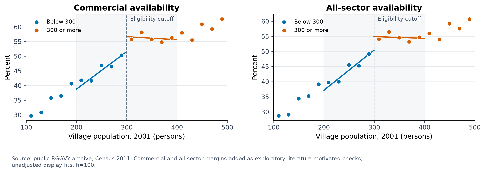
Source: public RGGVY archive, Census 2011. Commercial and all-sector margins added as exploratory literature-motivated checks; unadjusted display fits, h=100.
18 productive electricity heterogeneity
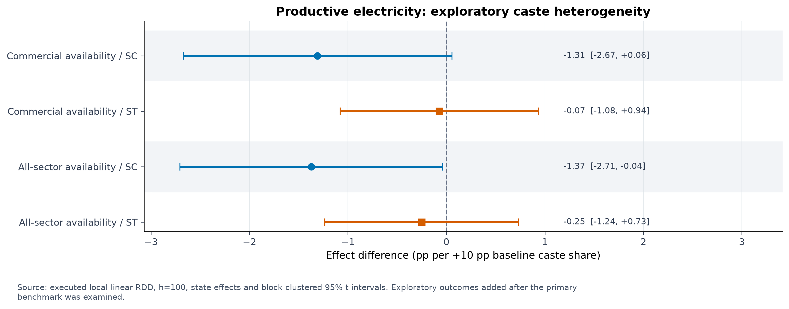
Source: executed local-linear RDD, h=100, state effects and block-clustered 95% t intervals. Exploratory outcomes added after the primary benchmark was examined.
Sources
- Burlig, F. and Preonas, L. (2024). Out of the Darkness and into the Light? Development Effects of Rural Electrification. Journal of Political Economy 132(9), 2937-2971.
- Burlig and Preonas replication archive, Harvard Dataverse.
- Sedai, A. K., Jamasb, T., Nepal, R. and Miller, R. (2021). Electrification and welfare for the marginalized: Evidence from India. Energy Economics 102.
- Azam, M. (2026). The Enclave Penalty: Tribes, Caste, and Electricity Reliability in India. IZA Discussion Paper 18493.
- Dugoua, E., Liu, R. and Urpelainen, J. (2017). Geographic and socio-economic barriers to rural electrification: New evidence from Indian villages. Energy Policy 106, 278-287.
- Calonico, Cattaneo, Farrell and Titiunik: rdrobust software and references.